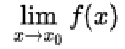
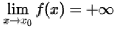
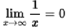
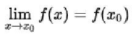
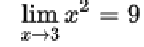

Centro San Domenico
Piazza San Domenico 12
40124 BOLOGNA
tel. 051 581718
http://www.csdricerca.com/
Bologna, 8 ottobre 2016
Agli amici degli
Incontri Interdisciplinari
Carissimi,
ci rivedremo lunedì 17 ottobre, alle ore 21, presso il Convento San Domenico, che ci ospiterà nella sua “sala rossa”, cui si accede da Via San Domenico 1.
Nella scorsa riunione del 20 giugno abbiamo deciso l’argomento su cui dirigere la nostra ricerca nell’anno che ora iniziamo. L’argomento è:
“Sapere è potere... o ci sono dei limiti?”
Si è pure suggerito di partire da che cosa intendere per “limite”. Inizieremo riflettendo sul “limite matematico”. Animerà l’incontro l’ing. Fabio Frattini, che ringrazio a nome di tutti.
Un cordiale saluto in attesa di rivederci.
fra Sergio Parenti O.P.
_______________________________
Breve resoconto dell'Incontro Interdisciplinare del 17 ottobre 2016
A cura di fra Sergio Parenti O.P.
PARENTI – Il nostro tema sarebbe “abbiamo dei limiti?”; il riferimento era di natura etica, chiedendoci se sia lecito fare tutto ciò che possiamo fare. Tuttavia si era detto di iniziare con la considerazione di limiti a livello teorico, partendo dalla matematica. Mi piacerebbe anche il tema dei limiti dell'universo e quello dei limiti della vita.
FRATTINI – Abbiamo un problema terminologico. Per limite intendiamo di solito uno “stop”. Invece nel caso della matematica il limite è l'oggetto di una tendenza. Chiedo scusa agli scienziati se farò una esposizione divulgativa. Ma vorrei iniziare con un esempio di limite diverso: la prova dell'esistenza di Dio di S. Anselmo d'Aosta (1033-1109). I monaci della sua abbazia (Bec, in Normandia), in tempi di polemica tra dialettici ed antidialettici, gli chiesero una prova puramente razionale dell'esistenza e dell'essenza di Dio. La risposta nel Proslogion fu che Dio esiste ed è l'essere di cui non possiamo concepirne uno maggiore.
Anche lo stolto che nega l'esistenza di Dio (Sal 13,1) capisce che cosa significhi “un essere di cui non è possibile concepirne uno maggiore”, che dunque esiste almeno nella sua intelligenza. Ma non può esistere solo nella sua intelligenza, infatti potrebbe concepirne uno maggiore, che esiste anche nella realtà.
Alle obiezioni Anselmo risponde che il passaggio dal pensiero alla realtà era legittimo solo in questo caso. Solo di Dio non si può pensare che non esista.
Il limite matematico in modo intuitivo era presente anche nell'antichità (Archimede): facendo avvicinare il più grande al più piccolo e viceversa, si ha una convergenza, per esaustione, verso ciò che sta in mezzo. Sempre in modo non rigoroso il limite fu usato da Newton, Leibniz, Eulero e D'Alembert. Nel XIX secolo Cauchy e poi Weierstrass diedero una migliore formalizzazione. Heine, nel 1872, fece la prima teoria completa. Nel 1922 Eliakim Hastings Moore ed H. L. Smith diedero la nozione topologica generale, che oggi viene usata.
Il limite viene concepito come il valore che viene ad assumere una funzione all'approssimarsi del suo indice di riferimento ad un dato riferimento. Il discorso può essere esteso alle successioni ed agli insiemi, ma noi ci fermiamo qui.
Facciamo un diagramma cartesiano: la funzione per cui y=kx, dove k è una costante, ad esempio 3, mi descrive una retta: noi diciamo che f(x)=3x; y è la variabile dipendente della funzione.
Il limite di una funzione in un punto x0 di
accumulazione all’interno del suo dominio (X) è un modo
per esprimere la quantità a cui tende il valore assunto dalla
funzione all'avvicinarsi del suo argomento a x0.
Indicando con f(x) la funzione, il limite viene
indicato con la notazione:
,
per cui
 significa che all’approssimarsi di x ad x0,
esprimibile con x → x0, il valore
assunto dalla funzione si avvicina ad l, tende ad l,
cioè f(x) → l. Il valore l
può essere finito, infinito, o non esistere per niente. Il
dominio della funzione è l'insieme dei valori che x può
assumere; il dominio di f(x) ne dipende. Potremmo anche
dire, in un certo senso, che il limite segue il comportamento di un
oggetto matematico quando una o più variabili del suo dominio
tendono ad assumere un determinato valore.
significa che all’approssimarsi di x ad x0,
esprimibile con x → x0, il valore
assunto dalla funzione si avvicina ad l, tende ad l,
cioè f(x) → l. Il valore l
può essere finito, infinito, o non esistere per niente. Il
dominio della funzione è l'insieme dei valori che x può
assumere; il dominio di f(x) ne dipende. Potremmo anche
dire, in un certo senso, che il limite segue il comportamento di un
oggetto matematico quando una o più variabili del suo dominio
tendono ad assumere un determinato valore.
Va precisato che il limite della funzione nel punto x0 non coincide necessariamente con il valore che la funzione assume nel punto x0, ma è un valore di tendenza che assume la funzione allo “approssimarsi” del suo argomento a x0. In altre parole, se ad esempio la funzione assume valore 2 per tutti gli x tranne che nel punto x0 in cui assume il valore 3, sarà che è uguale a 2 e non uguale a 3.
Il limite deve dipendere soltanto dai valori di f in punti arbitrariamente vicini x0, ma non dal valore che assume in x0, per questo motivo si chiede che│x - x0│sia maggiore di 0.
La nozione di limite viene normalmente estesa per considerare anche i casi in cui x0 e/o l siano infiniti. Ad esempio: .
Analogamente, la stessa definizione si adatta se il limite è pari a -∞.
Nel caso della parabola, si ha che al tendere di x all'infinito, f(x) tende all'infinito.
Nel caso dell'iperbole abbiamo invece che , mentre se x tende a 0, f(x) tende all'infinito.
C'è pure il caso in cui al tendere di x all'infinito, f(x) tende ad un valore finito.
Se x0 è contenuto nel dominio X di f e se vale: , cioè il limite coincide col valore della funzione in x0, come per esempio in , allora la funzione è continua in x0. Una funzione f è continua quando in ogni punto x0 del suo dominio, la f assume il valore del suo limite per x → x0.
Altrimenti la funzione ha in x0 un punto di discontinuità e la funzione in quel punto non ha limite definito.
Il teorema dell’unicità del limite recita che se esiste il limite di una funzione in un punto del suo dominio, tale limite è unico in quel punto ed è finito e coincidente sia da destra che da sinistra. Se la funzione avesse in x0 un punto di discontinuità, si avrebbe che il limite da destra sarebbe diverso da quello di sinistra, sia esso finito oppure ±∞. Parliamo del limite, non del valore della funzione.
PARENTI – E la velocità della luce come limite?
FRATTINI - Quando aumento la differenza di potenziale eccitando degli elettroni, mi aspetterei che man mano che cresce la differenza di potenziale aumentasse anche la velocità degli elettroni (i primi esperimenti furono fatti con gli elettroni). Sarebbe un andamento lineare. Invece si è visto che, aumentando la differenza di potenziale e quindi accelerando ulteriormente gli elettroni, all'approssimarsi della velocità degli elettroni a quella della luce, il valore si sposta asintoticamente verso il valore che essa ha nel vuoto. Si dice che la velocità della luce nel vuoto è il limite.
Come caso di funzione che non ammette limite, limite non esistente affatto, prendiamo la funzione seno [sin(α)]. Il seno, dato un cerchio con centro nel centro di un diagramma, è la proiezione del raggio di lunghezza 1, con angolo α, sull'asse delle y, o asse delle ordinate (il coseno è la proiezione sull'asse delle ascisse). Tale funzione, al variare dell’angolo, oscilla indefinitamente tra -1 e +1 e, quindi, non tende a nessun limite preciso, con α→ ∞. Posso avere dei limiti finiti nel campo limitato dell'angolo con cui può ruotare il raggio.
L'importante per noi, concettualmente, è capire che il limite non coincide necessariamente col valore che una funzione assume in un determinato punto, ma che assume avvicinandosi ad esso.
Riprendiamo allora la prova di Anselmo. La prova si sviluppa attraverso una successione di considerazioni (atti di pensiero) in cui si richiede che si consideri maggiore l’oggetto attuale del precedente. Questo processo potrebbe andare avanti indefinitamente: per quanto posso pensare a qualcosa di grande, c’è sempre qualcosa di maggiore a cui posso pensare fino a ciò, puramente concettuale, di cui non posso pensare nulla di maggiore.
Tutto questo lo potrei esprimere, con linguaggio matematico, come una successione ordinata di entità (E), con indice n, con n → ∞, per cui potrei indicare:
En+1 > En
per cui il limite di En, per n → ∞, sarebbe Dio. La successione degli atti di pensiero è senza fine, per noi, perché possiamo sempre pensare qualcosa di più grande di quello che riusciamo a pensare. Però, matematicamente, si potrebbe cercare di esprimere il limite.
PARENTI – Ma è infinita, la successione di maggiori? Anche la persona non dotta capisce il concetto: quindi non fa infiniti atti.
FRATTINI – Il tuo concetto è sempre finito.
SARTI – Fu il professore di matematica, al liceo, a dirmi che in sostanza il percorso di limite è per proprietà o entità omogenee tra loro. Le proprietà di Dio non sono omogenee con le proprietà dell'uomo. L'ultimo canto della Divina Commedia ci presenta un'immagine di Dio con qualcosa che è completamente al di fuori dall'esperienza del poeta. La successione non può essere usata per provare l'essenza divina. In questo non sono d'accordo con Anselmo.
FRATTINI – La successione c'è come processo mentale. Comunque non mi pronuncio in merito. L'infinito matematico non è quello filosofico. Parliamo anche di infinito al quadrato... come fosse un numero.
SARTI – Il discorso della non omogeneità di Dio rispetto all'uomo mi fa venire in mente il racconto i “I santi” di Buzzati, dove i santi abitano in casette sull'oceano, e vanno a fare il bagno nelle acque che sono Dio.
PETERNOLLI – Ho sempre avuto una simpatia per S. Anselmo. Uno studioso mi ha detto che in effetti anche nelle prove di S. Tommaso è sottesa l'idea più o meno cosciente dell'infinito per cogliere l'insufficienza del mondo.
PARENTI – Si tratta della corrente che segue Bontadini, il quale segue Gentile. L'idealismo parla di “assoluto”. Ma noi non abbiamo nemmeno il concetto di “ente” come lo tratta la metafisica. Arriviamo solo a capire che non è necessario che, per esistere, una cosa sia materiale. Ci fermiamo qui. Dopo costruiamo solo per via negativa, come per arrivare a Dio. La critica di Tommaso a S. Anselmo è che il concetto di “cosa di cui non si può pensare una più grande” non ce l'hai. Pensi di averlo perché le parole, singolarmente prese, hanno un senso nel linguaggio comune. Non esiste il terzo grado di astrazione, quello della metafisica, per Tommaso. Esiste solo un giudizio negativo.
FRATTINI – La prova di Anselmo è stata ripresa anche dopo.
PARENTI – Fino a Kurt Gödel, che prende da Duns Scoto. Il passaggio dal possibile al reale è ammesso anche da Aristotele in ciò che dura sempre, ma è un argomento per me molto difficile.
BERTUZZI – Kant ritiene che queste considerazioni siano su un piano non scientifico, ma dialettico, dove non si riesce a decidere né per il sì né per il no. S. Tommaso sostiene la necessità di ammettere l'infinito sul piano della linearità fisica come sul piano della linearità matematica, che è il piano dell'indefinito, dove puoi sempre andare oltre, ma non c'è un infinito in atto: su questo piano non sei ancora arrivato a Dio. Ad un certo punto sul livello di questo ordine causale non spieghi la successione. La causa essendi non è la causa fiendi. Nella polemica con Gaunilone, Anselmo dice che se hai l'idea di perfezione, non puoi pensare che non esista, ma su un piano diverso.
PARENTI – Tommaso ribatte che non hai l'idea di perfezione.
PETERNOLLI – Come fai ad avere l'idea di imperfetto se non hai l'idea di perfetto?
PARENTI – Perché non è necessario che tutto sia limitato. Non ho l'idea di qualcosa di illimitato. Ho visto solo cose limitate, però ho capito che questo legame non è necessario. Aristotele riesce a definire la trasformazione come atto proprio di chi è in potenza in quanto è ancora in potenza (la quiete, lo stato, è l'atto proprio di chi è in potenza in quanto è finalmente in atto), però uno agisce in quanto è in atto: chi ha detto, allora, che per agire ci si debba muovere? Chi ha detto che l'esistere debba essere per generazione? Ci sono i corpi celesti che, per lui, sono ingenerabili ed incorruttibili. Ma chi ha detto che per esistere una cosa debba muoversi? Questo lo capisce senza aver nessun esempio, solo per aver ragionato. Ma le nozioni che ha si fermano a ciò che si muove. Chi invece confonde i segni della logica con i concetti ed i concetti con la realtà, pensa di avere il concetto perché ha la parola.
Il mondo potrebbe essere esistito da sempre, solo per fede sappiamo che ha avuto un inizio. Obiezione : prendiamo un punto distante infinitamente: come possiamo essere arrivati ad ora? Risposta: ogni punto che possiamo prendere è sempre a distanza finita. Il problema della causa essendi, della causa prima che muove senza esser mossa è che non c'è nessuna catena di cause. Quella della catena è solo una ipotesi per dire che c'è una causa prima. Ma Dio agisce immediatamente e da solo su tutte le cause seconde, senza poter essere aiutato nemmeno a livello di causalità strumentale. Solo Dio crea. Le cause create sono sulla superficie di una sfera. Dio è al centro, e fa esistere le creature ed il loro agire secondo la natura che egli stesso dà loro.
JULVE – Il dibattito si è spostato sul piano filosofico e in termini di causalità. Eravamo partiti con la matematica e la grandezza. La matematica è formalità e Logica con la L maiuscola. Il discorso dei limiti in matematica presuppone la definizione di relazione di ordine; questa si ha se si verificano certe proprietà formali, per esempio se a>b e b>c allora a>c. Poi si è stabilito un ponte tra la relazione d'ordine ed una grandezza di tipo ontologico, che andrebbe definita in modo più esplicito. Si è poi affermato che l'esistere nella realtà è maggiore, più perfetto di ciò che esiste solo come idea.
PETERNOLLI – Anche in S. Tommaso c'è la quarta via. S. Agostino dice che il nostro cuore è inquieto finché non riposa in Dio: un desiderio di infinito.
PARENTI – Quello che anche Aristotele ammette come partecipazione (da qui la quarta via di Tommaso) non è che abbiamo il concetto di perfetto, è che abbiamo il più o meno buono, o il più o meno caldo. Avendo il più o meno, ci vuole qualcosa che sia più o meno partecipata. Ma io la conosco togliendo i limiti di quello che conosco, per via negativa. Invece un altro (Cartesio) dice che devo avere l'idea di perfezione per poter dire che una cosa è più o meno buona. Perfetto è ciò che è compiuto, cui non manca ancora qualcosa: una casa, la laurea... Ma senza la pretesa di avere il concetto di “perfetto” in assoluto, anche se posso mettere il simbolo, il nome. Aristotele non accettava che il mondo fosse infinito, perché se ammettiamo che debbano esserci contrarietà per spiegare il divenire delle cose, non ha senso parlare di contrarietà infinite. Aristotele ammette che si parli di infinito in geometria nel senso che puoi sempre avere una misura maggiore.
FRATTINI – Anselmo non dice che intende “maggiore” in senso spaziale.
PETERNOLLI – Ci sono anche differenze ontologiche.
BERTUZZI – L'andare oltre è una esigenza della ragione. Sul piano relativo, anche logico, posso sempre andare oltre. Ma bisogna uscire da questo livello di considerazione. Occorre la via della negazione e dell'eminenza, per pensare all'esistenza di Dio.